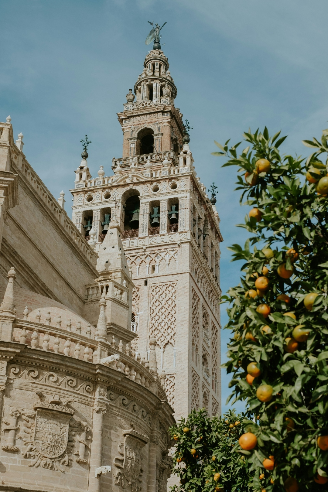
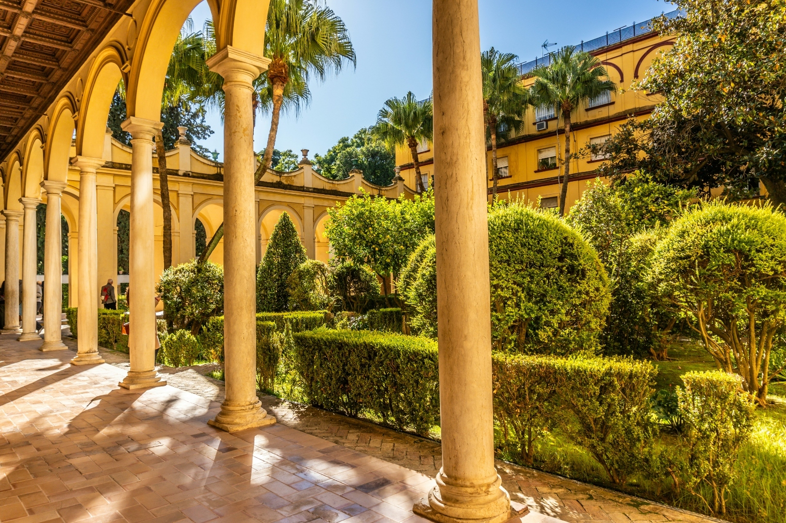
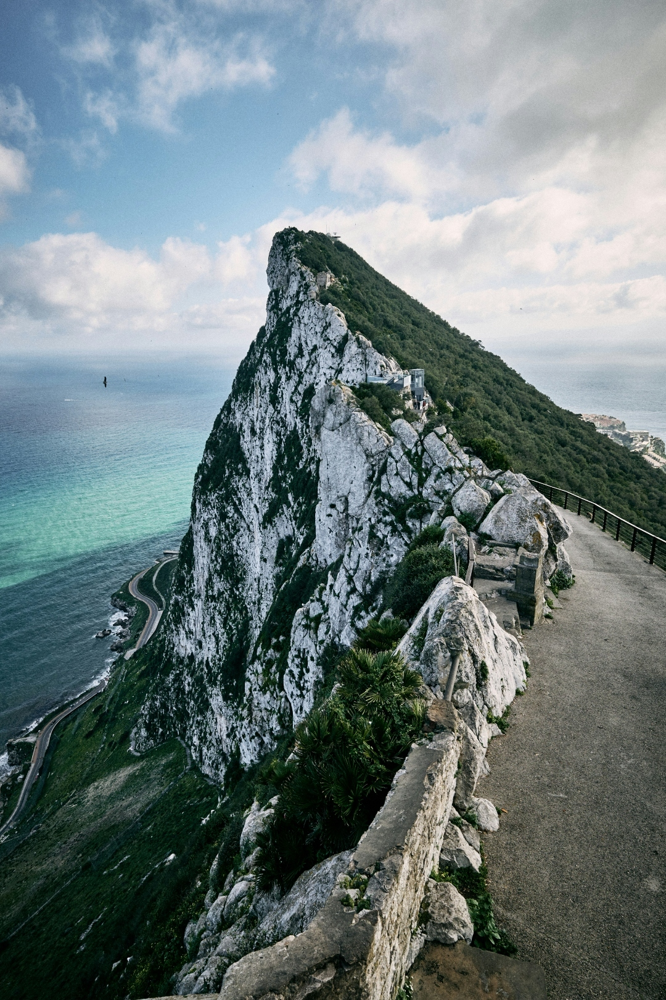
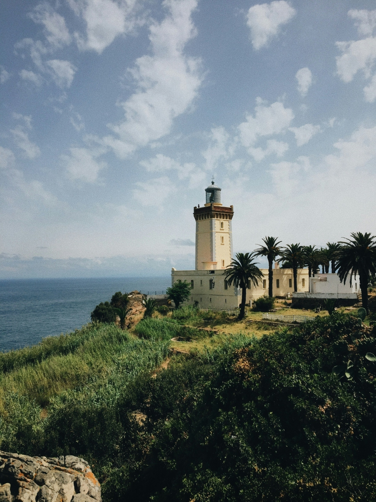
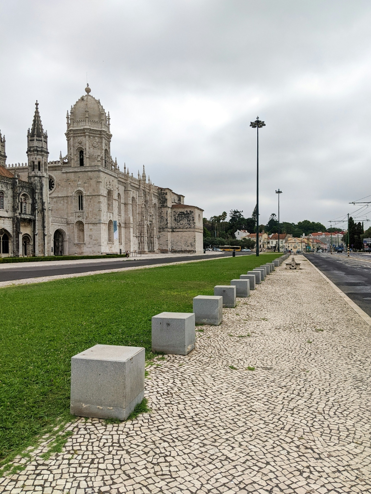
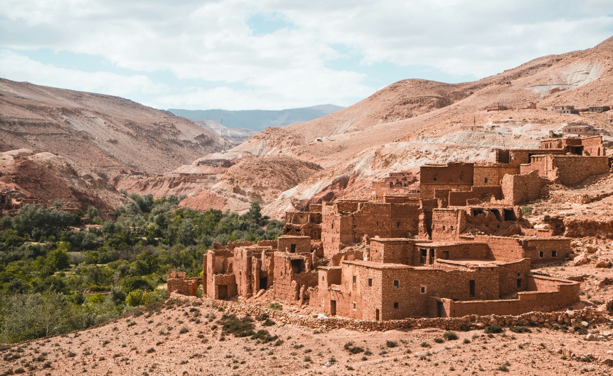

Program overview
Use this page to get a quick look at the trip, what is included, and the key dates to know. The itinerary is a working document and may change.
International Business
A once-in-a-lifetime trip across Spain, the UK, Morocco, and Portugal.
2 program leaders included
Included when the group reaches 10 full-paying participants.
24/7 assistance
Includes 24/7 emergency support, help with entry requirements, medical insurance, and travel protection options.
Photo highlights
Photos matched to the itinerary stops and landmarks.

A major landmark included in the Seville walking tour.

One of the signature architecture stops in Seville.

A dramatic landscape tied to the full-day Gibraltar visit.

A scenic coastal stop connected to the Tangier excursion.

Lisbon and Morocco views
These images line up cleanly with the itinerary’s Lisbon and Morocco portions, so they are kept as focused photo features.
Jerónimos Monastery
Included in the guided Belém neighborhood visit in Lisbon.
Telouet, Morocco
Used here as a Morocco atmosphere image to support the Tangier portion of the trip.

Itinerary preview
Here is a simple day-by-day view of the trip.
Pricing
The lower price estimate is shown at the top. Airfare is not included at this point in time.
| Minimum full-paying participants | Cost per student |
|---|---|
| 10–14 | $3,395 |
| 15–19 | $2,965 |
Note: Pricing does not include international airfare, which will be quoted when flights are released.
Optional single occupancy upgrade: $708 per participant.
Deadlines and notes
Helpful for keeping everyone on track and reducing back-and-forth questions.
Student payment schedule
- $400 non-refundable deposit required to reserve a spot on the trip.
- Jan. 12, 2027: Pay 15% of the ground package.
- Feb. 11, 2027: Pay 50% of the remaining program costs.
- Mar. 12, 2027: Pay 100% of the remaining program costs.
Important reminders
- The itinerary can change based on local conditions.
- Visa requirements depend on nationality and can change.
- The U.S. Embassy visit depends on availability.
- Extra activities may be added if requested.